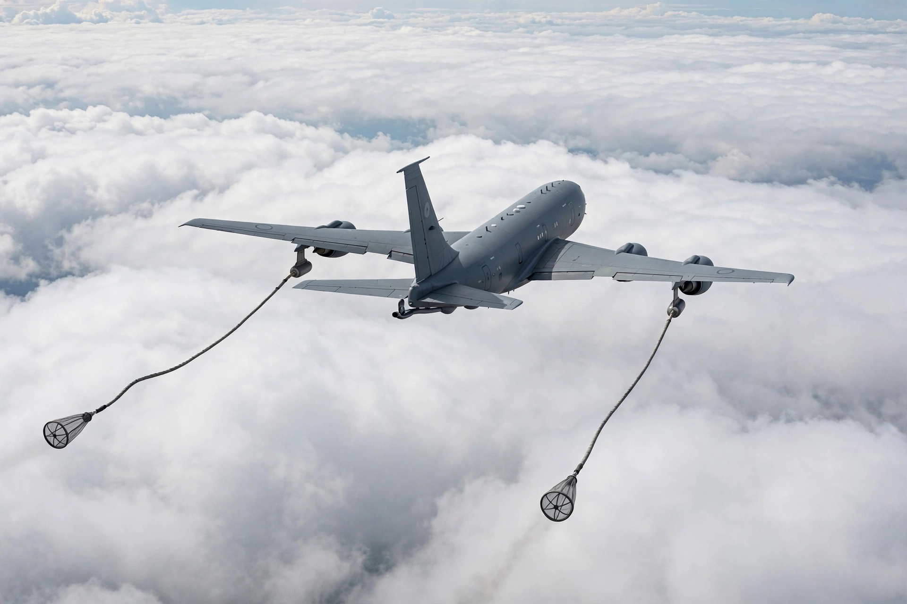

| Airbus A330 MRTT | |
|---|---|
| Manufacturer | Airbus Defence and Space |
| First flight | June 15, 2007 |
| Introduction | 2011, with the Royal Australian Air Force |
| Status | In production, in service |
| Primary users | Royal Australian Air Force, Royal Air Force, French Air and Space Force, NATO MMF |
| Developed from | Airbus A330-200 |
The Airbus A330 Multi Role Tanker Transport (MRTT) is a European aerial refuelling and strategic transport aircraft based on the civilian Airbus A330-200. It holds all of its fuel in the wings and underfloor tanks, leaving the passenger cabin free for up to 291 passengers or 380 troops, and the cargo hold available for freight, giving it a genuine dual role. It entered service with the Royal Australian Air Force (as the KC-30A) in 2011.

The MRTT was selected by Australia in 2004, the United Kingdom (as the Voyager, under the Future Strategic Tanker Aircraft programme), the United Arab Emirates and Saudi Arabia. In 2008 the type, offered by Northrop Grumman as the KC-45, won the U.S. Air Force KC-X competition, but the award was overturned after a Boeing protest and Boeing's KC-46 ultimately won the re-run contest in 2011. The A330 MRTT went on to win orders from France (as the Phénix), Singapore, South Korea, Spain, Canada and the NATO Multinational MRTT Fleet (MMF), in which Germany, the Netherlands, Luxembourg, Norway, Belgium and Czechia pool aircraft based at Eindhoven and Cologne.
The aircraft carries up to 111 tonnes of fuel. Refuelling is by an advanced refuelling boom system (ARBS) for receptacle-equipped receivers and/or underwing hose-and-drogue pods for probe-equipped aircraft; boom operators use a remote vision system with cameras rather than a prone window station. The RAF Voyager fleet is flown in part under an AirTanker consortium arrangement and some aircraft are fitted for VIP transport, including UK government use.
Airbus has demonstrated automatic air-to-air refuelling (A3R) with the type, achieving certification for day operations, and is developing the A330neo-based MRTT+ variant announced in 2024. More than 60 A330 MRTTs had been delivered by the mid-2020s, making it the most successful non-U.S. tanker programme and the main Western alternative to the KC-46 Pegasus.